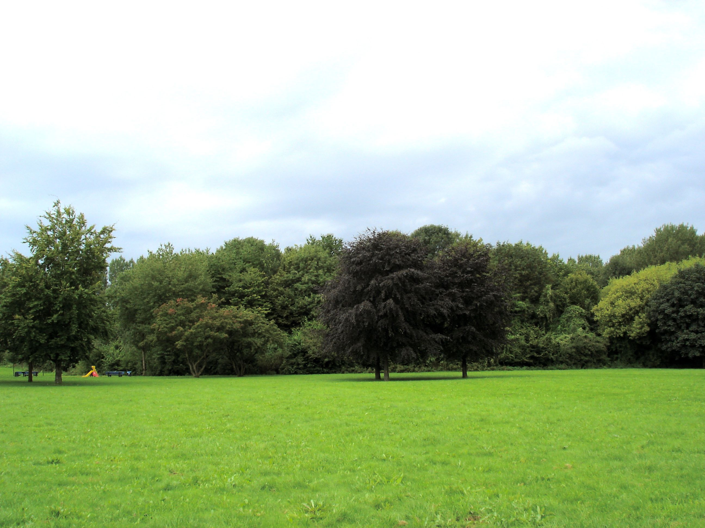

En aquest cas el webp també et permet animació, i si mirem el pes de l'imatge, es redueix considerablement sense pèrdua de qualitat.
| Nom Imatge | Mida Original | JPG (Estalvi %) | WebP (Estalvi %) |
|---|---|---|---|
| logotipWomens.jpg | 99.14 KB | 49.21 KB -> 50.37% | 25.95 KB -> 73.83% |
| imagenPradoArboles.jpg | 501.58 KB | 236.94 KB -> 52.75% | 142.60 KB -> 71.56% |
| postaDeSol.jpg | 158.75 KB | 47.56 KB -> 70.03% | 18.20 KB -> 88.56% |
| imatgeGradient.png | 6.94 KB | 6.94 KB -> 0% | 0.81 KB -> 88.28% |
| gifMinions.gif | 658.46 KB | No podem passar un gif a jpg no permet animació | 541.09 KB -> 17.83% |